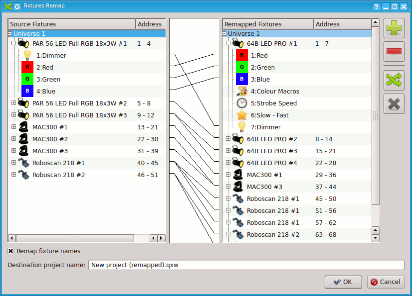

フィクスチャーチャンネルの修正はQLC+バージョン4.4.1で追加された機能です。
この機能を使えば会場常設の機材のチャンネルに合わせて、ファンクションを作り直すことなくフィクスチャーのチャンネルを再割り当てることができます。また、急遽フィクスチャーが故障してしまった場合など、プロジェクトデータを作り直している時間がない場合にも、フィクスチャーの再割り当てを行うだけで修正できます。
(例)事前にLEDパー1つ、ムービング１つ、スキャナー１つの計３つをコントロールするファンクションを組んでおき、いざ現場へ来た時にそれぞれの型番の違う50個のLEDパーや、ムービング等に再割り当てを行うことで全ての機器を望み通りにコントロールすることができます。
QLC+ではそんな修正も朝飯前です！
フィクスチャーのチャンネルの再割り当ては、プロジェクトデータを修正するためのものです。 QLC+では、フィクスチャーの型番が変わってもフィクスチャーのタイプ(ムービング、スキャナー等)が同じならば同じように動くように設計されています。
フィクスチャーのチャンネルの再割り当てを行うと自動的に新しいプロジェクトデータが作成されます。
QLC+ではフィクスチャーを入れ替える前と後で同じ照明演出ができるようにフィクスチャー、シーン、EFX、バーチャルコンソール、オーディオトリガー等を自動で最適化してくれます。
下のスクリーンショットを交えて使い方の説明をします。

| リマップ元の機器 | 左にはフィクスチャーがUniverseごとにツリー状に一覧表示されます。この一覧は現在のフィクスチャーであり、編集をするものではありません。 |
| リマップ先の機器 | 右には再割り当て先のフィクスチャーを追加していくための一覧です。 |

|
リマップ先にフィクスチャーを追加できます。クリックするとフィクスチャーの追加ウィンドウが表示されます。※フィクスチャー追加後はここからは修正することはできません。 |

|
フィクスチャーを削除します。 |

|
このボタンからフィクスチャーの再割り当てを行うことができます。 ※ 再割り当てはムービングとムービングなどの同じタイプのフィクスチャー間のみ可能です。ムービングをスキャナー等に再割り当てすることはできません。 左右のフィクスチャーリストから再割り当てしたいフィクスチャー同士を選択し、このボタンをクリックすると再割り当てが行われます。 タイプの違うフィクスチャーを選択した時などにはエラーメッセージが表示されます。 問題なく再割り当てがされると各フィクスチャー間が白い線で結ばれます。 |

|
再割り当てを取り消します。 |
| 機器の名前をリマップ元に合わせる | リマップ先のフィクスチャーにリマップ元と同じ名前をつけます。 |
| Destination project name | 再割り当てをするとリマップ元のデータと同じフォルダに新しいプロジェクトデータが作成されます。そのプロジェクトデータの名前を指定できます。デフォルトではリマップ元のファイル名に (remapped) を付け加えたものが保存されます。 |